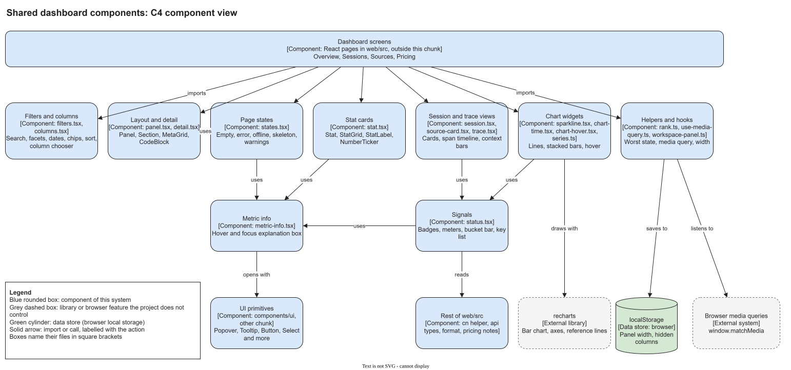

draft draft inferred covers web/src/components/*
Shared components C4
This view shows how the shared dashboard building blocks are grouped and who uses them. It helps a developer decide where a change to a badge, a chart or a filter belongs, and what else it touches. It also shows what the blocks lean on: basic interface parts, one chart library and the browser.
What the diagram shows
The dashboard screens import their building blocks from this folder: the overview page takes charts, panels, stat cards and badges. web/src/Overview.tsx:20-37
The sessions page takes the panel, the column chooser, the sort select and the session cards from the same place. web/src/Sessions.tsx:13-31
Filters and columns hold the search field, the facet checkboxes, the date range, the chips and the sort select, and the column chooser lets a reader hide table columns. web/src/components/filters.tsx:18-54 web/src/components/columns.tsx:62-95
Layout and detail give every screen the same bordered panel and the section, key value grid, code block and path list used in the session side panel. web/src/components/panel.tsx:5-13 web/src/components/detail.tsx:6-26
Page states hold the empty card, the error card with a retry button and the offline card, and they build on the layout panel and on the metric info box. web/src/components/states.tsx:68-96 web/src/components/states.tsx:280-328
Stat cards show one headline number with a label and an optional info glyph, and the number counts up unless the reader prefers reduced motion. web/src/components/stat.tsx:61-155 web/src/components/stat.tsx:14-47
Session and trace views draw the session card, the source card and the keyboard driven span timeline, and they use the signal badges for state and outcome. web/src/components/session.tsx:117-205 web/src/components/source-card.tsx:33-64 web/src/components/trace.tsx:227-315
Chart widgets draw the sparkline and the stacked daily bar chart, and the hover frame adds the pointer and keyboard inspection around them. web/src/components/sparkline.tsx:89-145 web/src/components/chart-time.tsx:23-184 web/src/components/chart-hover.tsx:18-121
The bar chart is drawn with the recharts library. web/src/components/chart-time.tsx:2-2
Signals hold the cost state, provenance and outcome badges, the meters, the bucket bar and the key list, and every badge with a hint opens the metric info box. web/src/components/status.tsx:149-165 web/src/components/status.tsx:286-322
Metric info opens its explanation in a popover from the UI primitives folder, which other chunk components also import for buttons, menus and tooltips. web/src/components/metric-info.tsx:46-191 web/src/components/columns.tsx:4-4 web/src/components/metric-info.tsx:8-8
The signal badges read their data types, class name helper and pricing notes from the rest of the web source folder. web/src/components/status.tsx:3-6
Helpers keep the worst of several states, follow a media query, and remember the side panel width in browser local storage. web/src/components/rank.ts:13-15 web/src/components/use-media-query.ts:3-18 web/src/components/workspace-panel.ts:49-73 web/src/components/workspace-panel.ts:25-31
The column chooser stores the hidden column keys in the same browser storage. web/src/components/columns.tsx:33-39
Capability and related functionality
The diagram realises the shared display layer of the dashboard. The written explanation is in Web UI components Overview, the tests are in Web UI components Tests, and the import level view is in Shared components imports and Web UI components Diagrams. The primitives box is documented in Web ui UI components Overview. The behaviour of the info box is in Metric info interaction flow.
Shared components C4

Code references
| Code | What it shows |
|---|---|
web/src/Overview.tsx:20-37 |
Overview page imports of the shared blocks |
web/src/Sessions.tsx:13-31 |
Sessions page imports of the shared blocks |
web/src/components/filters.tsx:18-54 |
Search field |
web/src/components/columns.tsx:62-95 |
Column chooser |
web/src/components/states.tsx:280-328 |
Offline card |
web/src/components/stat.tsx:61-155 |
Stat card |
web/src/components/trace.tsx:227-315 |
Span timeline |
web/src/components/chart-time.tsx:23-184 |
Stacked time chart |
web/src/components/chart-time.tsx:2-2 |
recharts import |
web/src/components/status.tsx:286-322 |
Bucket bar |
web/src/components/metric-info.tsx:46-191 |
Metric info |
web/src/components/workspace-panel.ts:49-73 |
Workspace panel hook |
web/src/components/columns.tsx:33-39 |
Hidden column storage |